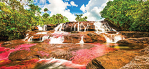

El turismo, uno de los sectores mas golpeados durante este momento crítico por el que pasa la humanidad es también uno de los más importantes y resilientes, por esta razón el gobierno en alianza con empresas a fines ha dado pie a la iniciativa para reactivar este sector económico. La propuesta será destinos alternativos dentro del país, playas recónditas, turismo de montaña, barrios innovadores en grandes ciudades. Los lugares poco frecuentados serán más apetecidos y más seguros. El turismo de masas dará paso a uno más selectivo.La idea principal es evitar las aglomeraciones y por tanto en un inicio todo el sector se movera de manera obligatoria por reservas previas y asi garantizar viajes seguros. Nosotros como empresa responsable hemos creado planes con cupos altamente limitados a unos precios bajos con el fin de reactivar de manera rápida la ecónomia de estas zonas una vez sea levantada la cuarentena.
Caño Cristales Rojo, amarillo, negro, azul. Caño Cristales exhibe una auténtica paleta de colores a su serpenteante paso por un paraje excepcional, el Parque Nacional Natural Sierra de La Macarena.
Nuqui Está ubicado al sur de Bahía Solano y se encuentra rodeado de ríos que terminan en aguas del Océano Pacífico. Es un lugar tan mágico como el avistamiento de ballenas que en él se puede apreciar. Es un paraíso natural lleno de paisaje, sabor caribe y una rica gastronomía divertida.